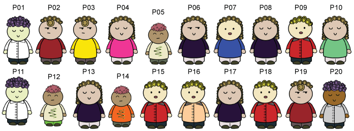
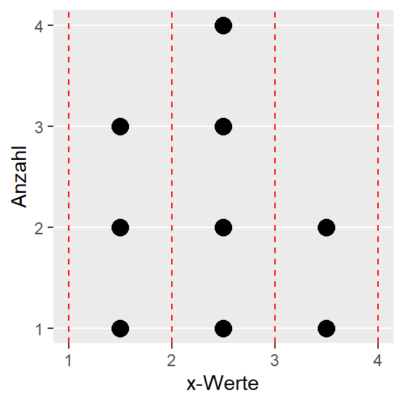
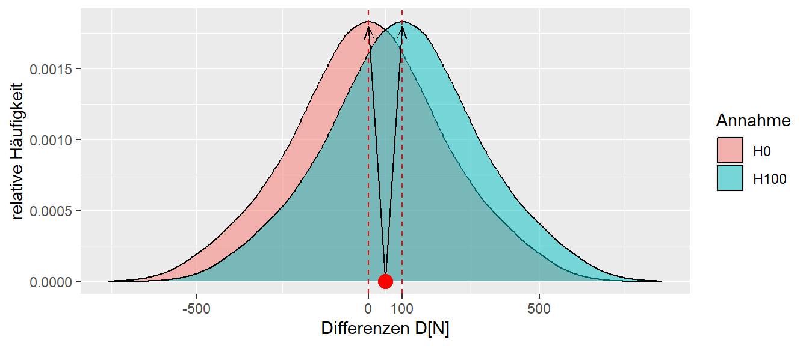

8 Eine kleine Welt der Unsicherheit
Starten wir mit einer übersichtlichen kleinen Welt, um das notwendige statistische Modell so einfach wie möglich zu halten. Die Welt, über die wir eine Aussage treffen wollen, besteht nur aus insgesamt 20 Personen. In Abbildung 8.1 sind die Bewohner dieser Welt einzeln zu sehen. Die Gesamtheit aller Personen (allgemein Objekte), über die wir eine Aussage treffen wollen, bezeichnen wir als die Population.
Definition 8.1 (Population) Die Gesamtheit aller Objekte/Dinge/Personen, über die eine Aussage getroffen werden soll, wird als Population oder Grundgesamtheit bezeichnet.
8.1 Ein Experiment
Wir wollen nun ein Experiment, eine Krafttrainingsstudie, durchführen, um zu überprüfen, ob ein bestimmtes Training dazu führt, dass sich die Beinkraft erhöht. Allerdings haben wir nur sehr wenige Ressourcen zur Verfügung (bzw. wir sind faul) und können daher nur sechs Messungen durchführen. Aus einem kürzlich durchgeführten Zensus haben wir die Beinkraftwerte der gesamten Population. Eine einfache Möglichkeit, die Kraft darzustellen, ist eine Tabelle (siehe Tabelle 8.1).
| ID | Kraft[N] |
|---|---|
| P01 | 2414 |
| P02 | 2462 |
| P03 | 2178 |
| P04 | 2013 |
| P05 | 2194 |
| P06 | 2425 |
| P07 | 2305 |
| P08 | 2117 |
| P09 | 2298 |
| P10 | 2228 |
| P11 | 2243 |
| P12 | 2497 |
| P13 | 1800 |
| P14 | 2152 |
| P15 | 2089 |
| P16 | 2090 |
| P17 | 3200 |
| P18 | 2196 |
| P19 | 2485 |
| P20 | 2440 |
Selbst bei 20 Werten ist die Darstellung mittels einer Tabelle allerdings leider wenig übersichtlich. Wir müssen Zeile für Zeile die Tabelle durchgehen und uns spezifische Kennwerte notieren, um Vergleiche zwischen den Werten durchführen zu können. Beispielsweise könnten wir notieren, dass der Maximalwert der Beinkraft bei \(3200\)N für P17 und der Minimalwert von P13 bei \(1800\)N liegt. Aber wirklich übersichtlich ist die Darstellung in Form einer Tabelle nicht. Für solche univariaten Daten (uni = eins) kann eine übersichtlichere Darstellung mittels eines sogenannten Dotplots erreicht werden (siehe Abbildung 8.2).

Mittels eines Dotplots kann nun deutlich schneller abgelesen werden, welchen Wert das Minimum bzw. das Maximum annimmt. Die grafische Darstellung erlaubt weiterhin direkt abzuschätzen, in welchem Wertebereich der Großteil der Daten liegt. Allerdings wird durch diese Art der Darstellung die Information darüber, welche Person die jeweiligen Werte besitzt, nicht mehr dargestellt. Dies stellt jedoch nicht zwingend ein Problem dar, da wir in den meisten Fällen sowieso Aussagen über die Gruppe und weniger über einzelne Personen machen wollen. Ein Dotplot hat gleichzeitig den Vorteil, dass wir die Verteilung der Werte abschätzen können. In welchem Bereich liegen die meisten Datenwerte? Liegen die Werte eng beieinander oder streuen die Werte sehr stark? Gibt es einzelne Werte, die sehr unterschiedlich von den anderen Werten sind? Dies sind alles Fragen, die notwendig sind, um einen Datensatz und dessen Eigenschaften beurteilen zu können.
Kommen wir zurück zu unserem Kraftexperiment. Wir wollen den Gesundheitsstatus unserer Lummerländer verbessern und führen dazu ein Krafttraining für die Beine durch. Da wir evidenzbasiert arbeiten wollen, möchten wir überprüfen, ob das Training wirklich zu einer Verbesserung der Beinkraft geführt hat. Um das Experiment zu vereinfachen, und da es sich mehr um ein Gedankenexperiment handelt, gehen wir von einem perfekten Krafttraining aus. Das heißt, wir führen eine perfekte Intervention durch, die zu der gleichen Verbesserung bei allen Teilnehmerinnen und Teilnehmern führt (Warum ist dies eine unrealistische Annahme?).
Das Beinkrafttraining sei also perfekt und verbessert die Kraftleistung um genau \(+100\)N. Dieser Kraftzuwachs ist unabhängig davon, welche Person aus unserer Population das Training durchführt. Um die Effektivität des Trainings abzuschätzen, vergleichen wir zwei Gruppen miteinander: eine Interventionsgruppe, die das Krafttraining durchläuft, und eine Kontrollgruppe. In beiden Gruppen sollen jeweils \(n_{\text{TRT}} = n_{\text{CON}} = 3\) Teilnehmerinnen bzw. Teilnehmer einbezogen werden. Um die spätere Diskussion zu vereinfachen, führen wir nun etwas Terminologie ein.
Definition 8.2 (Abhängige Variable ) Die abhängige Variable ist diejenige Variable, die in einer Studie beobachtet, gemessen oder analysiert wird. Die abhängige Variable wird oft als “Effekt” betrachtet.
Definition 8.3 (Unabhängige Variable ) Die unabhängige Variable ist die Variable, die in einer Studie oder einem Experiment manipuliert oder kontrolliert wird. Die unabhängige Variable wird oft als “Ursache” betrachtet, da sie den potenziellen Einfluss auf die abhängige Variable repräsentiert.
In unserem Experiment ist die Gruppenzugehörigkeit die unabhängige Variable und die Beinkraft die abhängige Variable. Wir untersuchen den Effekt der Gruppenzugehörigkeit auf die Beinkraft. Die Gruppe ist die Ursache für mögliche Effekte auf die Beinkraft.
Wir tun jetzt so, als ob wir die Daten aus dem Zensus nicht vorliegen hätten. Dies kommt der Durchführung eines tatsächlichen Experiments näher, da dort üblicherweise auch nicht vorher bekannt ist, welche Performance die Teilnehmerinnen und Teilnehmer vor dem Experiment haben. Es stellen sich nun zwei Fragen: 1) Wie wählen wir die sechs Personen aus unserer Population aus, und 2) wie teilen wir die sechs Personen in die beiden Gruppen auf?
Wir könnten zum Beispiel die ersten drei Personen in die Interventionsgruppe und die letzten drei in die Kontrollgruppe stecken. Allerdings, wenn die Personen in irgendeiner Form nach der Beinkraft vorsortiert sind, z.B. allgemeiner Gesundheitsstatus, Arbeitstätigkeit usw., dann würde sich diese Sortierung auf die Gruppen übertragen. Das heißt, wir hätten eine sogenannte Störvariable, die unser Ergebnis verfälschen würde.
Definition 8.4 (Störvariable) Eine Störvariable ist eine Variable, die einen Einfluss auf die abhängige Variable hat, deren Einfluss jedoch nicht kontrolliert wurde bzw. die Variable ist nicht von Hauptinteresse für die Untersuchung.
Im Zweifelsfall kann davon ausgegangen werden, dass es immer eine ganze Reihe von Störvariablen gibt. Unglücklicherweise auch Störvariablen, die zum Teil gar nicht bekannt sind. Das heißt, es wird ein Mechanismus benötigt, der Teilnehmerinnen und Teilnehmer auswählt und gleichzeitig dafür sorgt, dass Variablen, die gar nicht bekannt sind, möglichst gleichmäßig ausgewählt werden. Der Mechanismus, der dies sicherstellen kann, ist eine sogenannte Zufallsstichprobe (Warum?).
Definition 8.5 (Stichprobe) Eine Stichprobe ist eine Teilmenge der Objekte aus der Population.
Definition 8.6 (Zufallsstichprobe) Eine Zufallsstichprobe ist eine Teilmenge der Objekte aus der Population, die zufällig ausgewählt wurde.
Bei der Zufallsstichprobe haben alle Personen in der Population vor dem Experiment die gleiche Wahrscheinlichkeit, gezogen zu werden. Dadurch kann sichergestellt werden, dass in der Stichprobe unterliegende Störvariablen, ob messbar oder nicht messbar, ebenso in der Stichprobe verteilt sind.
Schauen wir uns ein einfaches Beispiel an. Sei eine Population der Größe \(N = 100\) gegeben, in der \(30\) Objekte das Merkmal A haben und \(70\) Objekte das Merkmal B. Es werden nun wiederholt Zufallsstichproben der Größe 20 aus dieser Population gezogen und für jede Stichprobe wird der Anteil der As berechnet.
pop <- rep(c("A","B"), c(30,70))
n_sam <- 20
res <- numeric(n_sam)
for (i in 1:n_sam) {
sam <- sample(pop, 20)
res[i] <- mean(sam == 'A')
}
res [1] 0.30 0.40 0.30 0.35 0.10 0.30 0.30 0.25 0.15 0.30 0.50 0.30 0.30 0.40 0.25
[16] 0.30 0.20 0.35 0.25 0.35Wir sehen, dass tatsächlich in den meisten Fällen der Anteil von As in der Stichprobe in der Nähe der \(30\%\) aus der Population liegt. Nicht in allen Fällen, es gibt Schwankungen um diesen Wert herum, aber im Großen und Ganzen spiegelt die Stichprobe in Bezug auf die Verteilung von Merkmalen A und B die Population gut wider. Das heißt, es handelt sich um eine repräsentative Stichprobe.
Nachdem jetzt geklärt ist, wie die Stichprobe aus der Population ermittelt wird, ist nun die nächste Frage, wie die Objekte aus der Stichprobe auf die beiden Gruppen verteilt werden. Die gleichen Überlegungen wie diejenigen zur Ermittlung der Stichprobe führen dazu, dass die Objekte zufällig in die beiden Gruppen verteilt werden müssen. In diesem Fall der Aufteilung wird allerdings von einer sogenannten Randomisierung gesprochen.
Definition 8.7 (Randomisierung ) Mit Randomisierung wird der Prozess der zufälligen Zuweisung von Probanden oder Elementen zu verschiedenen Gruppen oder Bedingungen in einem Experiment bezeichnet. Die Randomisierung wird verwendet, um sicherzustellen, dass die Auswahl und Zuordnung der Elemente frei von systematischer Beeinflussung erfolgt.
Um jetzt für unser Experiment eine Stichprobe zu ermitteln, haben wir die Population durchnummeriert und mittels eines Zufallszahlengenerators die Zahlen \(i = \{3,7,8,9,10,20\}\) ermittelt. Die entsprechenden Personen werden aus der Population anhand der ID ausgewählt. Anschließend teilt wieder ein Zufallszahlengenerator die sechs Personen in die beiden Gruppen auf (siehe Abbildung 8.3).
flowchart TD
A{Population} --> B(Zufallszahlengenerator)
B --> C[Stichprobe]
C --> D(Zufallszahlengenerator)
D --> E[Kontrollgruppe]
D --> F[Interventionsgruppe]
Dieser Prozess der zufälligen Ziehung und Zuteilung ist extrem wichtig, um das Ergebnis des Experiments eindeutig zuordnen zu können und eine Generalisierung über die bestehenden Objekte hinaus durchführen zu können. Leider ist der erste Schritt, die zufällige Ziehung von Objekten aus der Population, in der Realität nur sehr schwer realisierbar.
In Tabelle 8.2 ist die Stichprobe und Zuteilung in die Gruppen zu sehen.
| ID | Kraft[N] | Gruppe |
|---|---|---|
| P08 | 2117 | CON |
| P09 | 2298 | CON |
| P03 | 2178 | CON |
| P07 | 2305 | TRT |
| P10 | 2228 | TRT |
| P20 | 2440 | TRT |
Mit diesen sechs Personen führen wir jetzt unser Experiment durch. Die drei Personen aus der Kontrollgruppe durchlaufen im Interventionszeitraum nur ein Stretchtraining, während die Interventionsgruppe zweimal die Woche für 12 Wochen unser perfektes Krafttraining durchführt. Nach diesem Zeitraum messen wir die Beinkraft aller Personen aus beiden Gruppen. Wir erhalten das folgende Ergebnis (siehe Tabelle 8.3). Nochmal zur Erinnerung, wir nehmen an, dass wir die Werte aus dem Census nicht kennen.
| ID | Kraft[N] |
|---|---|
| P08 | 2117 |
| P09 | 2298 |
| P03 | 2178 |
| \(\bar{K}\) | 2198 |
| ID | Kraft[N] |
|---|---|
| P07 | 2405 |
| P10 | 2328 |
| P20 | 2540 |
| \(\bar{K}\) | 2424 |
Für beide Gruppen ist in Tabelle 8.3 jeweils noch der Mittelwert \(\bar{K}\) dokumentiert, um die Gruppen leichter miteinander vergleichen zu können. Später werden wir noch weitere Maße kennenlernen, die es ermöglichen, zwei Mengen von Werten miteinander zu vergleichen. Der Mittelwert ist ein Maß, das uns schon bekannt sein sollte.
Definition 8.8 (Mittelwert) Der Mittelwert \(\bar{x}\) über \(n\) Werte berechnet sich nach der Formel:
\[ \bar{x} = \frac{\sum_{i=1}^n x_i}{n} \tag{8.1}\]
Der Mittelwert wird mit einem Strich über der Variable dargestellt.
Gleichzeitig haben wir das zentrale und namensgebende Konzept aus der Statistik kennengelernt, nämlich das der Statistik. Ein Wert, der mittels der Werte aus einer Stichprobe berechnet wird, wird als Statistik bezeichnet.
Definition 8.9 (Statistik) Ein auf einer Stichprobe berechneter Wert wird als Statistik bezeichnet.
Der Definition folgend, ist somit der Mittelwert \(\bar{X}\) einer Stichprobe eine Statistik. Das Gleiche würde gelten, wenn anstatt des Mittelwerts der Maximalwert oder der Minimalwert einer Stichprobe ermittelt wird. Beide Werte würden ebenfalls eine Statistik darstellen.
Um nun den Unterschied zwischen den beiden Gruppen zu untersuchen, berechnen wir die Differenz \(D\) zwischen den beiden Mittelwerten \(D = \bar{K}_{\text{TRT}} - \bar{K}_{\text{CON}}\). Die Differenz kann natürlich auch in die andere Richtung berechnet werden und es würde sich das Vorzeichen ändern. Hier gibt es keine Vorgaben, sondern die Richtung kann frei bestimmt werden. Wenn bekannt ist, in welcher Richtung der Unterschied berechnet wird, stellt dies kein Problem dar. Im vorliegenden Fall ziehen wir die Interventionsgruppe von der Kontrollgruppe ab, da wir davon ausgehen, dass die Intervention zu einer Krafterhöhung führt und wir dadurch einen positiven Unterschied erhalten, wenn das Training tatsächlich zu einer Steigerung der Kraftleistung führt (vgl. Gleichung 8.2).
\[ D = 2424N - 2198N = 226 N \tag{8.2}\]
Da der Wert D wiederum auf den Daten der Stichprobe berechnet wird, handelt es sich ebenfalls um eine Statistik.

In Abbildung 8.4 sind die Werte der beiden Gruppen, deren Mittelwerte \(\bar{K}_{\text{CON}}\) und \(\bar{K}_{\text{TRT}}\) und der Unterschied \(D\) zwischen diesen abgebildet. Wie erwartet zeigt die Interventionsgruppe den höheren Kraftwert im Vergleich zu der Kontrollgruppe. Allerdings ist der Wert mit \(D = 226\) größer als der tatsächliche Zuwachs von \(\Delta_{\text{Training}} = 100\) (Warum ist das so?).
Der Unterschied zwischen den beiden Gruppen ist natürlich auch zum Teil auf die Unterschiede, die zwischen den beiden Gruppen vor der Intervention bestanden haben, zurückzuführen. Was wäre denn passiert, wenn wir eine andere Stichprobe gezogen hätten?
Sei \(i = \{12,2,19,4,8,16\}\) eine zweite Stichprobe. Dies würde zu den folgenden Werten nach der Intervention führen.
| ID | Kraft[N] | Gruppe |
|---|---|---|
| P12 | 2497 | CON |
| P02 | 2462 | CON |
| P19 | 2485 | CON |
| P04 | 2113 | TRT |
| P08 | 2217 | TRT |
| P16 | 2190 | TRT |

In Abbildung 8.5 sind wieder die Datenpunkte, Mittelwerte und der Unterschied in den Mittelwerten zwischen den beiden Gruppen abgetragen. In diesem Fall ist allerdings die Differenz zwischen den beiden Gruppen genau in der anderen Richtung \(D = -308\). Daher würden wir dieses Ergebnis genau in der anderen Richtung interpretieren. Das Krafttraining führt nicht nur zu keiner Verbesserung in der Kraftfähigkeit, sondern sogar zu einer Verschlechterung!
Es hätte aber auch sein können, dass wir noch eine andere Stichprobe gezogen hätten, z.B. \(i = \{6,5,7,20,14,16\}\). Mit dieser Stichprobe würden wir zu folgendem Ergebnis kommen (siehe Tabelle 8.5).
| Gruppe | Kraft[N] |
|---|---|
| CON | 2308 |
| TRT | 2327 |
| \(D\) | 19 |
In diesem Fall haben wir zwar wieder einen positiven Unterschied zwischen den beiden Gruppen in der zu erwartenden Richtung gefunden. Der Unterschied von \(D = 19\) ist allerdings deutlich kleiner als der tatsächliche Unterschied \(\Delta = 100\). Daher würden wir möglicherweise das Ergebnis so interpretieren, dass wir das Krafttraining als ineffektiv bewerten und keine Empfehlung für das Training aussprechen.
Zu beachten ist, dass keines der Ergebnisse 100% korrekt ist. Entweder ist der Unterschied zwischen den beiden Gruppen deutlich zu groß, in der falschen Richtung oder deutlich zu klein. Das Ergebnis des Experiments hängt ursächlich damit zusammen, welche Zufallsstichprobe gezogen wird. Dieses Phänomen gilt generell für jedes Ergebnis eines Experiments. Das Phänomen, dass der Wert der berechneten Statistik zwischen Wiederholungen des Experiments schwankt, wird als Stichprobenvariabilität bezeichnet.
Definition 8.10 (Stichprobenvariabilität) Durch die Anwendung von Zufallsstichproben variiert eine auf den Daten berechnete Statistik. Diese Variabilität wird als Stichprobenvariabilität bezeichnet.
Streng genommen führt die Stichprobenvariabilität allein noch nicht dazu, dass sich die Statistik zwischen Wiederholungen des Experiments verändert, sondern die zu untersuchenden Werte in der Population müssen selbst auch eine Streuung aufweisen. Wenn wir eine Population untersuchen würden, bei der alle Personen die gleiche Beinkraft hätten, würden unterschiedliche Stichproben immer den gleichen Mittelwert haben und wiederholte Durchführungen des Experiments würden immer wieder zu demselben Ergebnis führen. Dieser Fall ist in der Realität jedoch praktisch nie gegeben, und sämtliche Parameter, für die wir uns interessieren, zeigen immer eine natürliche Streuung in der Population. Diese Streuung in der Population führt daher zu dem besagten Effekt, dass das gleiche Experiment mehrmals wiederholt zu unterschiedlichen Zufallsstichproben führt und dementsprechend immer zu unterschiedlichen Ergebnissen führt. Das Ergebnis ist inhärent variabel bzw. unsicher.
Daher ist eine der zentralen Aufgaben der Statistik, mit dieser Variabilität umzugehen und Forscher in die Lage zu versetzen, trotzdem rationale Entscheidungen zu treffen. Eine implizite Kernannahme dabei ist, dass wir mit Hilfe von Daten überhaupt etwas über die Welt lernen können. Das heißt, dass uns die Erhebung von Daten auch in die Lage versetzt, rationale Entscheidungen zu treffen. Entscheidungen wie ein spezialisiertes Krafttraining mit einer klinischen Population durchzuführen oder eine bestimmte taktische Variante mit meiner Mannschaft zu trainieren, um die Gegner besser auszuspielen. Alle diese Entscheidungen sollten rational vor dem Hintergrund von Variabilität und Unsicherheit getroffen werden und auch möglichst oft zu korrekten Entscheidungen führen. Wie wir sehen werden, kann uns die Statistik leider nicht garantieren, immer die korrekte Entscheidung zu treffen. Nochmals auf den Punkt gebracht nach Wild und Seber (2000, p.28):
The subject matter of statistics is the process of finding out more about the real world by collecting and then making sense of data.
Untersuchen wir jedoch zunächst das Phänomen weiter, dass Wiederholungen desselben Experiments zu unterschiedlichen Ergebnissen führen. In unserem Lummerlandbeispiel haben wir nämlich den Vorteil, dass uns die Wahrheit bekannt ist. Diesen Umstand können wir uns zunutze machen.
In Abbildung 8.6 ist die Verteilung unserer bisherigen drei \(D\)s abgetragen.

Die drei Werte liegen relativ weit auseinander. Eine Anschlussfrage könnte daher sein: “Welche weiteren Werte sind denn überhaupt mit der vorliegenden Population möglich?”.
8.2 Die Stichprobenverteilung
Wir können einfach mal das Experiment weiter wiederholen. In Abbildung 8.7 sind 15 verschiedene Stichproben abgetragen. Wir haben in jeder Zeile jeweils sechs TeilnehmerInnen gezogen. Drei für die Kontrollgruppe und drei für die Interventionsgruppe. Für jede dieser Zeilen können wir jeweils den Gruppenmittelwert berechnen und den Unterschied \(D\) bestimmen.
Warum eigentlich bei 15 aufhören? Wir haben ja den Vorteil, dass unsere Population relativ übersichtlich ist. Vielleicht können wir uns ja noch aus unserer Schulzeit an Kombinatorik erinnern. Da haben wir den Binomialkoeffizienten kennengelernt. Die Anzahl der möglichen Kombinationen von \(k\) Elementen aus einer Menge von \(n\) Elementen berechnet sich nach:
\[ \text{Anzahl} = \binom{n}{k} = \frac{n!}{k!(n-k)!} \tag{8.3}\]
In unserem Fall wollen wir zunächst sechs Elemente aus \(N = 20\) auswählen und dann drei Elemente aus den sechs gezogenen Elementen auswählen, um diese entweder der Interventionsgruppe oder der Kontrollgruppe zuzuweisen (Warum brauchen wir uns nur eine Gruppe anzuschauen?). Die Anzahl der möglichen Stichprobenkombinationen ist folglich:
\[ \text{Anzahl} = \binom{20}{6}\binom{6}{3} = 7.752\times 10^{5} \tag{8.4}\]
Das sind jetzt natürlich selbst bei dieser kleinen Population eine große Menge an einzelnen Experimenten, aber dafür sind Computer da: Die können all diese Experimente in kurzer Zeit durchführen. In Abbildung 8.8 ist die Verteilung aller möglichen Experimentausgänge, d.h. alle Differenzen \(D\) zwischen der Interventions- und der Kontrollgruppe, abgebildet.

Auf der x-Achse sind die möglichen Differenzen \(D\) abgetragen, während auf der y-Achse die relative Häufigkeit, d.h. die Häufigkeit für einen bestimmten \(D\)-Wert geteilt durch die Anzahl \(7.752\times 10^{5}\) aller möglichen Werte. Die Verteilung der \(D\)s wird als Stichprobenverteilung bezeichnet.
Definition 8.11 Die Stichprobenverteilung einer Statistik beschreibt die Verteilung der Statistik. Beispielsweise wenn die Statistik der Mittelwert \(\bar{x}\) ist, dann beschreibt die Stichprobenverteilung die Verteilung der möglichen Mittelwerte.
Abbildung 8.8 zeigt, dass die überwiegende Anzahl der Ausgänge tatsächlich auch im Bereich von \(\Delta = 100\) liegt. Noch präziser: Das Maximum der Verteilung, also die höchste relative Häufigkeit, liegt genau auf der roten Linie. Dies sollte uns etwas beruhigen, denn es zeigt, dass unsere Art der Herangehensweise mittels zweier Stichproben auch tatsächlich in den meisten Fällen einen nahezu korrekten Wert ermittelt. Allerdings zeigt die Stichprobenverteilung auch, dass Werte am rechten Ende, die deutlich zu hoch sind, wie auch Werte am linken Ende der Verteilung, die deutlich in der falschen Richtung liegen, möglich sind. Das bedeutet, wenn wir das Experiment nur einmal durchführen, können wir uns eigentlich nie sicher sein, welches dieser vielen Experimente wir durchgeführt haben. Es ist zwar wahrscheinlicher, dass wir eines aus der Mitte der Verteilung durchgeführt haben, einfach da die Anzahl größer ist, aber wir haben keine 100%-ige Garantie, dass wir nicht Pech gehabt haben und das Experiment ganz links mit \(D = -500\) oder aber das Experiment ganz rechts mit \(D = 700\) durchgeführt haben. Diese Unsicherheit wird leider keine Art von Experiment vollständig auflösen können. Eine weitere Eigenschaft der Verteilung ist ihre Symmetrie bezüglich des Maximums mit abnehmenden relativen Häufigkeiten, je weiter von Maximum \(D\) entfernt ist (Warum macht das heuristisch Sinn?).
Die Darstellungsform von Abbildung 8.8 wird als Histogramm bezeichnet und eignet sich vor allem dazu, die Verteilung einer Variablen z.B. \(x\) darzustellen. Dazu wird der Wertebereich von \(x\) zwischen dem Minimalwert \(x_{\text{min}}\) und dem Maximalwert \(x_{\text{max}}\) in \(k\) gleich große Intervalle unterteilt, und die Anzahl der Werte innerhalb jedes Intervalls wird abgezählt und durch die Anzahl der Gesamtwerte geteilt, um die relative Häufigkeit zu erhalten.
Zum Beispiel für die Werte:
\[ x_i \in \{1,1.5,1.8,2.1,2.2,2.7,2.8,3.5,4 \} \] könnte das Histogram ermittelt werden, indem der Bereich von \(x_{\text{min}} = 1\) bis \(x_{\text{max}} = 4\) in vier Intervalle unterteilt wird und dann die Anzahl der Werte in den jewiligen Intervallen ermittelt wird (siehe Abbildung 8.9). Die ermittelte Anzahl würde dann noch durch die Gesamtanzahl \(9\) der Elemente geteilt um die relative Häufigkeit zu berechnen.

Die Form des Histogramms hängt davon ab, wie viele Intervalle verwendet werden. Die Auflösung wird mit mehr Intervallen besser, aber gleichzeitig verringert sich die Anzahl pro Intervall. Andersherum wird die Auflösung mit weniger Intervallen geringer, aber die Anzahl der Elemente pro Intervall wird größer und somit stabiler. Daher sollte in den meisten praktischen Fällen die Anzahl variiert werden, um sicherzugehen, dass nicht nur zufällig eine spezielle Darstellung gefunden wurde.
Zurück zu unserer Verteilung von \(D\) unter \(\Delta = 100\)N in Abbildung 8.8. Wie schon besprochen, sind alle Werte zwischen etwa \(D = -500N\) und \(D = 700\)N plausibel bzw. möglich. Schauen wir uns doch einmal an, was passiert, wenn das Training überhaupt nichts bringt und es keine Verbesserung gibt, also \(\Delta = 0\).

Die Verteilung in Abbildung 8.10 sieht praktisch genau gleich aus wie diejenige für \(\Delta = 100\). Der einzige Unterschied ist lediglich, dass sie nach links verschoben ist, und zwar scheinbar genau um die \(100\)N Unterschied zwischen den beiden \(\Delta\)s. Dies ist letztendlich auch nicht weiter verwunderlich, bei der Berechnung des Unterschieds \(D\) zwischen den beiden Gruppen kommen in beiden Fällen genau die gleichen Kombinationen vor. Bei \(\Delta = 100\) wird aber zu der Interventionsgruppe das \(\Delta\) addiert, bevor die Differenz der Mittelwerte berechnet wird. Da jedoch gilt:
\[ D = \frac{1}{3}\sum_{i=1}^3 x_{\text{KON}i} - \frac{1}{3}\sum_{j=1}^3 (x_{\text{TRT}j} + \Delta) = \bar{x}_{\text{KON}} - \bar{x}_{\text{TRT}} + \Delta \]
Daher bleibt die Form der Verteilung genau gleich und wird lediglich um den Wert \(\Delta\) im Vergleich zur Nullintervention nach rechts verschoben. Mit Nullintervention ist umgangssprachlich die Intervention gemeint, bei der nichts passiert, also \(\Delta = 0\) gilt.
Als Zwischenfazit sollten wir jetzt verstanden haben, dass jede Statistik, die wir auf einer Stichprobe berechnen, inherent unsicher ist. In der Realität haben wir nicht nur die Variabilität aufgrund der Randomisierung, sondern auch viele andere Einflussgrößen, die das Ergebnis eines Experiments bei Wiederholungen beeinflussen können. Mithilfe der Statistik versuchen wir, die Unsicherheit zu quantifizieren, und lassen dies später in unsere Entscheidungsprozesse einfließen.
8.3 Unsicherheit in Lummerland
Spielen wir das Spiel mit den beiden Stichprobenverteilungen weiter. Gehen wir davon aus, dass nur eine dieser beiden Annahmen korrekt ist. Entweder ist die Intervention effektiv \(\Delta = 100\) oder sie bringt nichts, also \(\Delta = 0\). Wenn wir diese beiden Verteilungen übereinanderlegen, erhalten wir Abbildung 8.11. Wir haben die Darstellung jetzt etwas verändert und eine Kurve durch die relativen Häufigkeiten gelegt. Dieser Graph wird jetzt nicht mehr als Histogramm, sondern als Dichtegraph bezeichnet.
In Abbildung 8.11 ist klar zu sehen, dass die beiden Graphen zu großen Teilen überlappen, und das auch noch in einem Bereich, in dem beide Ergebnisse ihre höchsten relativen Häufigkeiten haben, also auch die größte Wahrscheinlichkeit, unter den jeweiligen Annahmen aufzutreten. Unser Problem besteht darin, dass wir in der Realität nicht wissen, welchen Effekt unser Training auf die Stichprobe hat. Wenn wir dies wüssten, müssten wir das Experiment ja gar nicht durchführen. Normalerweise haben wir nur ein einziges Ergebnis, nämlich den Ausgang unseres einen Experiments.

Wenn wir jetzt unser Experiment einmal durchgeführt haben und ein einziges Ergebnis für \(D\) erhalten, zum Beispiel \(D = 50\), dann haben wir ein Zuweisungsproblem (siehe Abbildung 8.12). Wie weisen wir unser Ergebnis den beiden möglichen Realitäten zu? Einmal kann es sein, dass das Krafttraining nichts gebracht hat und wir lediglich eine der vielen möglichen Stichprobenkombinationen beobachtet haben, die zu einem positiven Wert für \(D\) führen. Oder aber das Krafttraining ist effektiv gewesen und hat zu einer Verbesserung von \(\Delta = 100\)N geführt, und wir haben lediglich eine Stichprobenkombination gezogen, die zu einem Ergebnis von \(D = 50\) führt. In der Realität wissen wir jedoch nicht, welche der beiden Annahmen korrekt ist, und wir können es auch nie vollständig wissen. Denn egal, wie viele Experimente wir durchführen, es bleibt immer die Möglichkeit, dass wir zufällig nur Werte aus dem linken oder rechten Teil der Verteilung beobachten. Diese Unsicherheit lässt sich leider durch keine Art von Experiment vollständig auflösen.
Die Methoden der Statistik liefern uns nun Werkzeuge an die Hand, um trotzdem rational zu entscheiden, welche der beiden Annahmen möglicherweise wahrscheinlicher ist. Gleichzeitig ermöglicht uns die Statistik, abzuschätzen bzw. zu berechnen, wie groß die Unsicherheit dieser Entscheidung ist. Die Statistik sagt dabei immer nur etwas über die beobachteten Daten aus, jedoch nichts über die zugrundeliegenden wissenschaftlichen Theorien.
8.4 Things to know
- Population
- (Zufalls-)Stichprobe
- Randomisierung
- Statistik
- Stichprobenverteilung
- Abhängige und unabhängige Variable